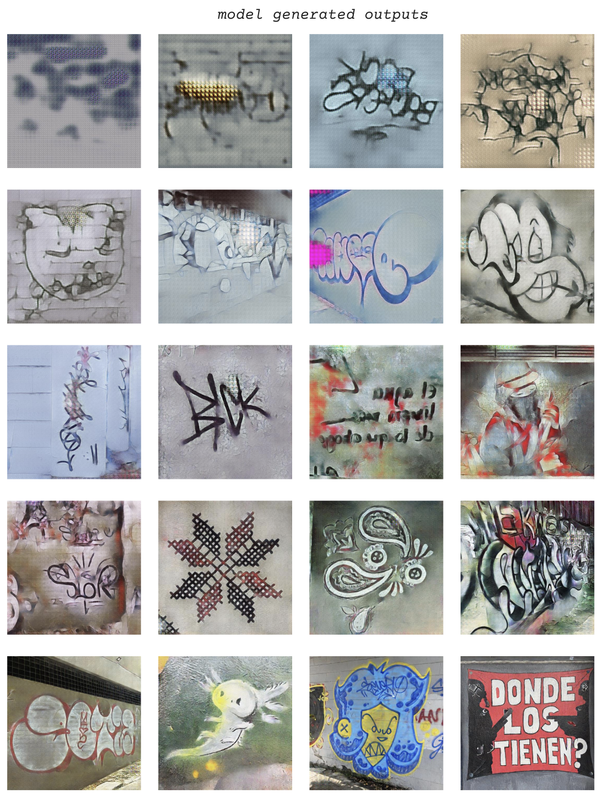

Marianne Teixido
@marianneteixidoMarianne’s dataset is about the visual narrative of CDMX, expressed through street art and graffiti. It consists of tags, murals, and everything in between. Marianne trained the model on these images and their outlines.
